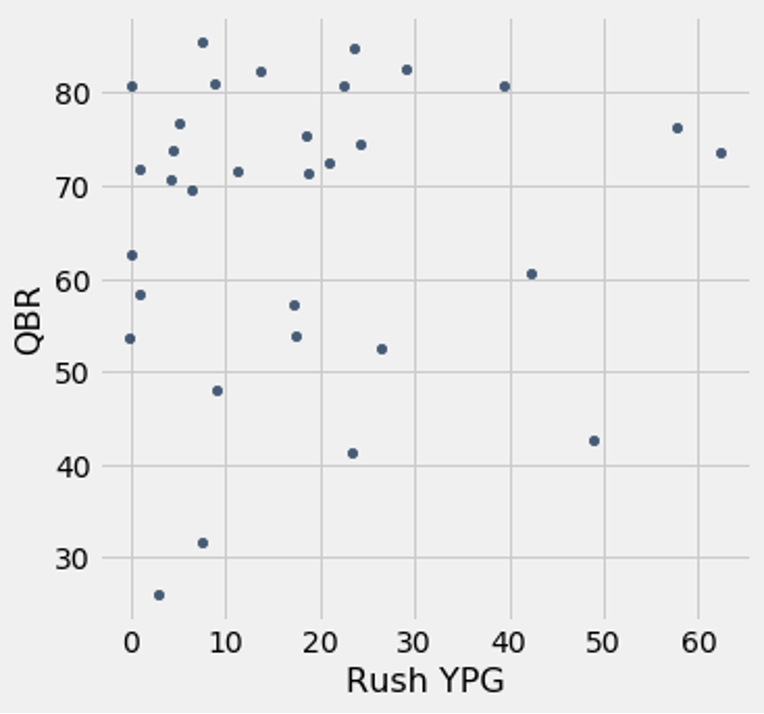
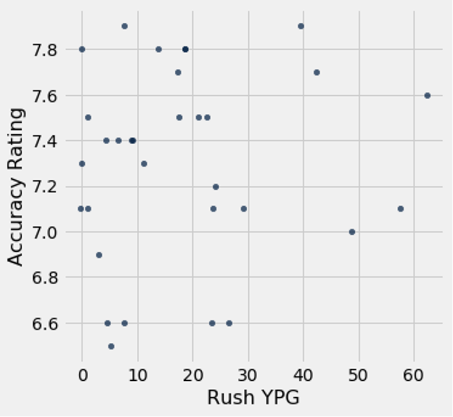

Running Quarterbacks: An Advantage or Unsustainable?
By Anish Cherwoo | November 29, 2020
It is no secret that there has been a shift in the style of play at the quarterback position. As 49er’s head coach Kyle Shanahan said, there used to be quarterbacks that could run but they were not able to throw as well, but now there's an increasing amount of them that can do both at a high level. Just how drastic is this change though? Well, just think of the quarterbacks drafted then versus now. In 2004, the top ranked QB prospects were Eli Manning, Philip Rivers, and Ben Roethlisberger. I’d say that I could probably run backwards, on one foot faster than all of them. Now what about the last couple years? Well… Kyler Murray, Daniel Jones, Lamar Jackson, and Justin Herbert. I’d say they all have the speed to play skill positions on their teams.

Shown above is the distribution of QBs mobility (based on rush yards per game) from 2005 (when Michael Vick was tearing it up) compared to that of now. Clearly the 0-10 yard per game (YPG) is the largest in both, but the graph shows that the maximum YPG and the average YPG are substantially greater in today’s distribution of players versus 15 years ago. In fact, over 50% of QBs now run for more than 10 YPG while as in 2005 less than 20% of QBs were doing that. Now that we have established that there has been a change, we need to figure out if this is indeed qualified and should be heavily factored into teams draft processes. To answer that we can look at the quarterbacks’ success based on how mobile they are. To do this we will plot the mobility against the total QBR of the quarterback.
 The scatter plot seems to show that either a mobile or immobile QB can have a high QBR, but it is rare to see a mobile quarterback with a low QBR. In fact, the one quarterback seen with about 50 YPG and the 42.7 QBR is Cam Newton, and his recent COVID-19 diagnosis could be a huge reason for this, as his QBR was almost 60 previously. However, I don’t think it is as simple, though, as just concluding that more mobile quarterbacks have a higher QBR floor. To accurately understand this we can take a look at the average accuracy based on the mobility of the quarterback.  In this chart there is no direct correlation between the mobility and accuracy, but it does seem that after 20 rush YPG the accuracy takes a slight hit. As we saw with the other graph, however, this does not always affect the quarterback as much since defenses have the extra task of worrying about the quarterback running. A lot of the success relies on the coaching staff and the utilization of the player as well. To name an extreme example, I don’t think Lamar Jackson would be nearly as successful in another system, but it would also be dumb to say that that makes him bad. He uses his legs to make up for his lack of arm talent which can sometimes be more lethal for opposing defenses. Jim Harbough in Baltimore has done a phenomenal job in using every bit of his talent, but their underwriting playoff runs lead me to believe that a QBs ceiling is as high as his throwing ability. The key takeaways are to understand that the foundation for this change is rooted in youth players. Having the ability to move is extremely beneficial, but there is a baseline for skill one must have when quarterbacking to make key throws for his or her team. When it comes down to the games on the biggest stages, the only way a team will win is if the QB can win it with his arm. That being said, if you could hold the passing ability constant between two players, the one with more mobility is definitely the more advantageous to have, but a team needs to decide how they want to balance the accuracy and mobility attributes, with throwing rightfully having more weightage.